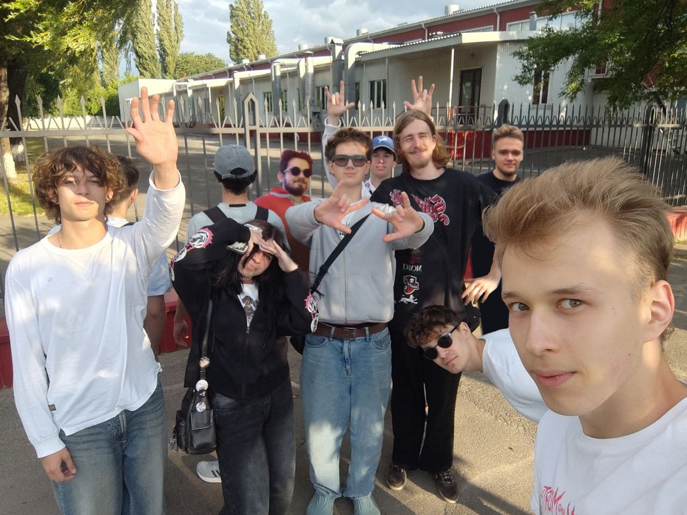

Редакция «ВолодяНьюс» поздравляет Володю с Днём рождения
автор: Саня
Сегодня для всей команды «ВолодяНьюс» особенный день: свой День рождения отмечает человек, вокруг которого строится весь наш блог — именитый Володя. Это событие мы не могли оставить без внимания и подготовили специальную публикацию в его честь.
Коллектив редакции выразил искренние пожелания, отметив, что наступающий год должен принести Володе только положительные моменты. В числе поздравлений — прогресс в работе с достойным вознаграждением, а именно бесплатной баночкой балтики на смене, красочные события в жизни, сравнимые с яркостью OLED-мониторов, а также спортивные успехи, будь то на баскетбольной площадке или в других сферах, таких как бизнес или киберспортик. Некоторые учасники блога желали данкать в баскете не только в кольца, но наша команда не до конца поняла суть этого высказывания.
Не забыли авторы и о любимых увлечениях Володи: желают, чтобы катки с друзьями всегда сопровождались «завозом контентика», а каждое утро начиналось с позитивного настроения и звонкого пения птиц, напоминающих о том, насколько хорошими будут последующие в году дни.
Таким образом, День рождения Володи стал не только личным праздником, но и значимым событием для всей команды «ВолодяНьюс», которая в очередной раз подчеркнула своё тёплое отношение и уважение к главному герою.
С Днём рождения!

Комментарии
Володя! Пару слов от редактора